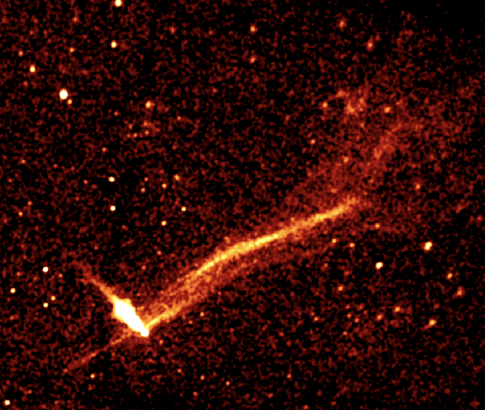
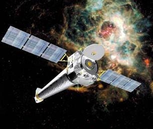
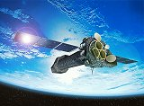
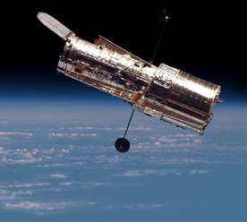

Oleg Kargaltsev
Professor of Astrophysics
Department of Physics
Corcoran Hall, 407
George Washington University
Washington, DC 20052
USA
Phone (cell): (814) 404-6378
Fax:(202) 994-3001
E-mail: kargaltsev @ gwu.edu

Previous Institutions:
Graduate students and postdocs trained in my group (more recent first):
- Hui Yang, GW Physics PhD student
- Steven Chen, GW Physics PhD student
- Alexander Lange, GW Physics PhD student
- Dr. Igor Volkov, former postdoctoral scientist, currently Data Scientist in industry
- Dr. Noel Klingler (PhD 2018), former GW Physics graduate student, currently scientist at NASA GSFC
- Dr. Jeremy Hare (PhD 2018), former GW Physics graduate student, currently scientist at NASA GSFC
- Dr. Blagoy Rangelov (2013-2016), former GW Physics postdoc, currently Assistant Professor at Texas State University, US
- Dr. Martin Durant (2008-2012), former UF Astronomy postdoc, currently Data Scientist and software engineer at Continuum Analytics
Useful links:

X-ray and Other Tools:
CfA/SAO Sites:
Chandra/XMM Sites:
GSFC Sites:
Other High-Energy Astrophysics Sites:
Astrophysics Journals and Newsletters:
Other Astrophysics Sites:
Astrophysics Jobs and Funding: